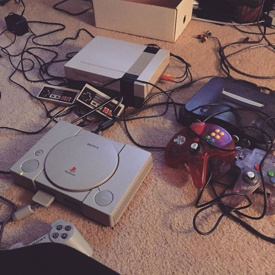
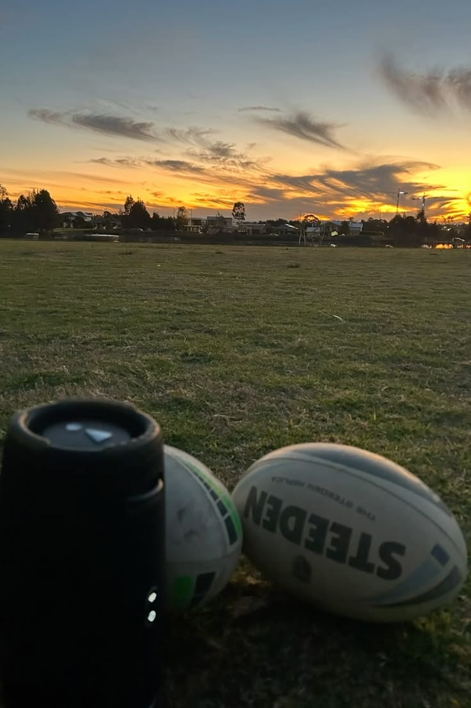
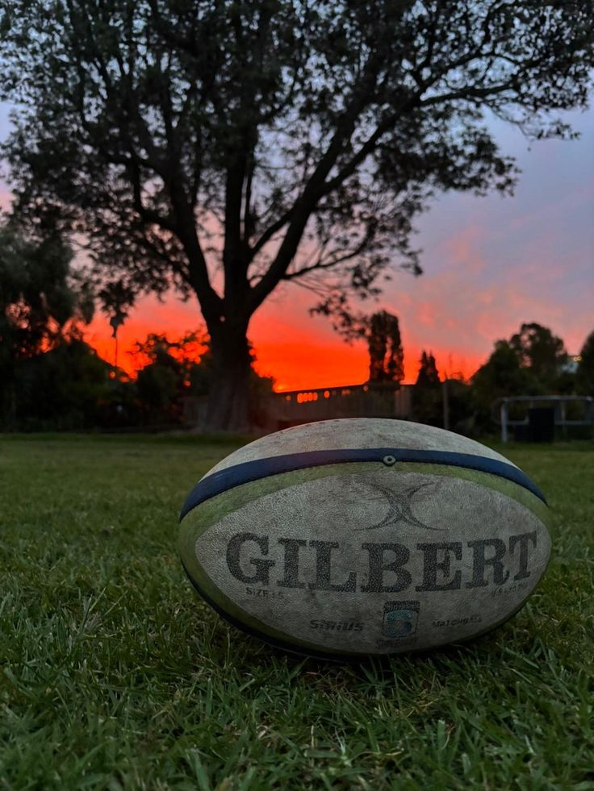
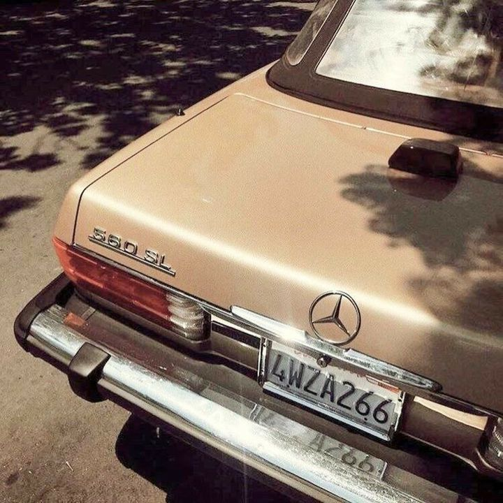
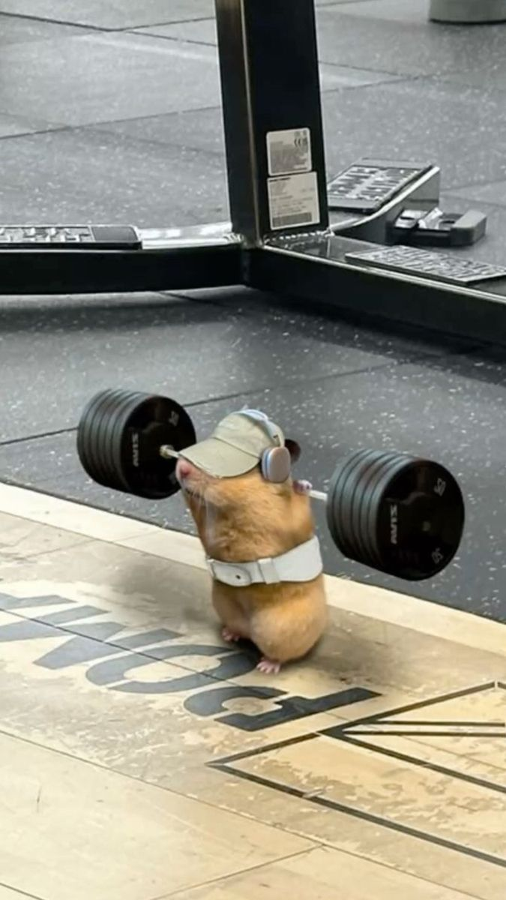
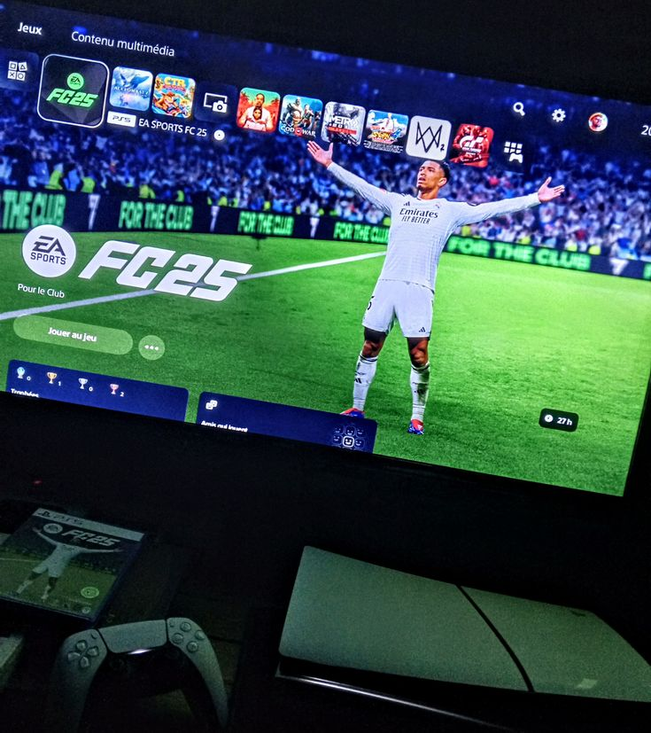
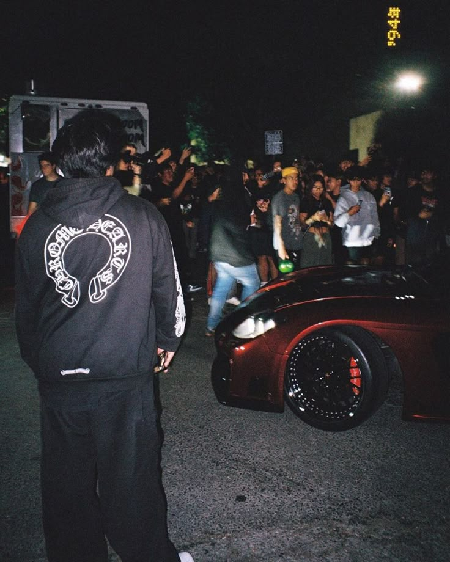

Photography is a way of feeling, touching, and of loving. What you have caught on film is captured forever. It remembers the little things, long after you have forgotten everything




Welcome to my Photogaphy portfolio website. Here youll find a collection of my favorite photographs that ive captured over the years, my goal is to create visually appealing images that tell a story and evoke emotions feel free to browse through the gallery and get in touch if your up for collabs.bye


